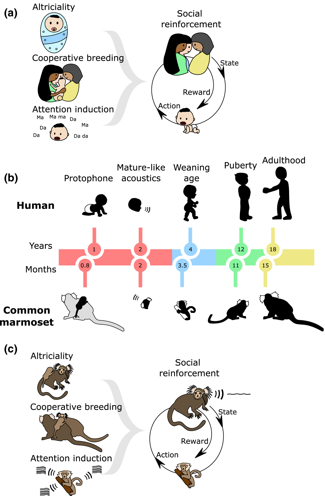
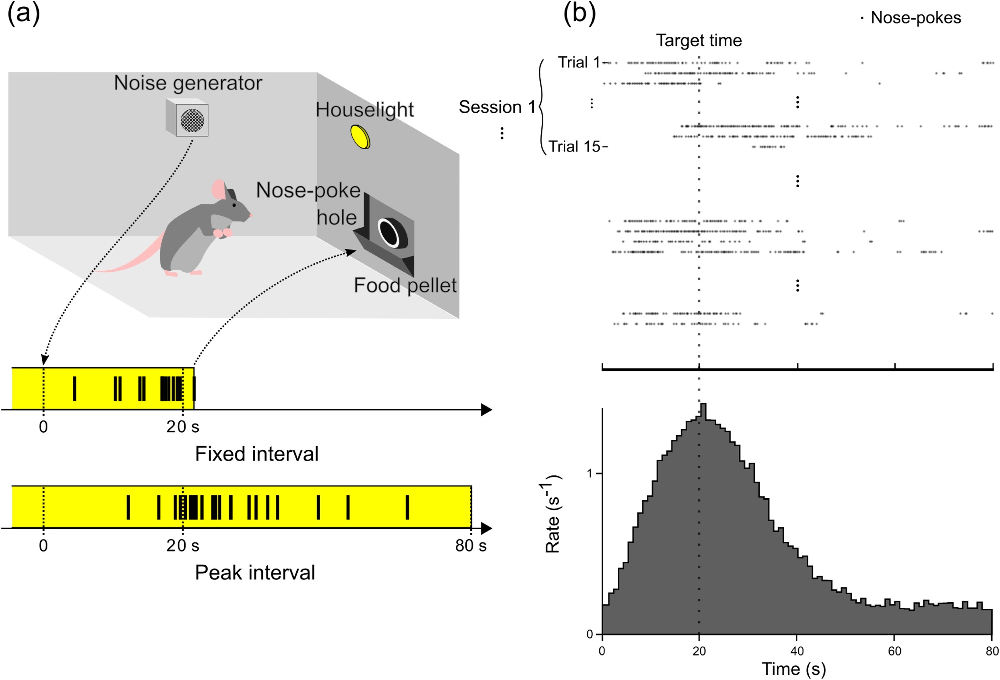
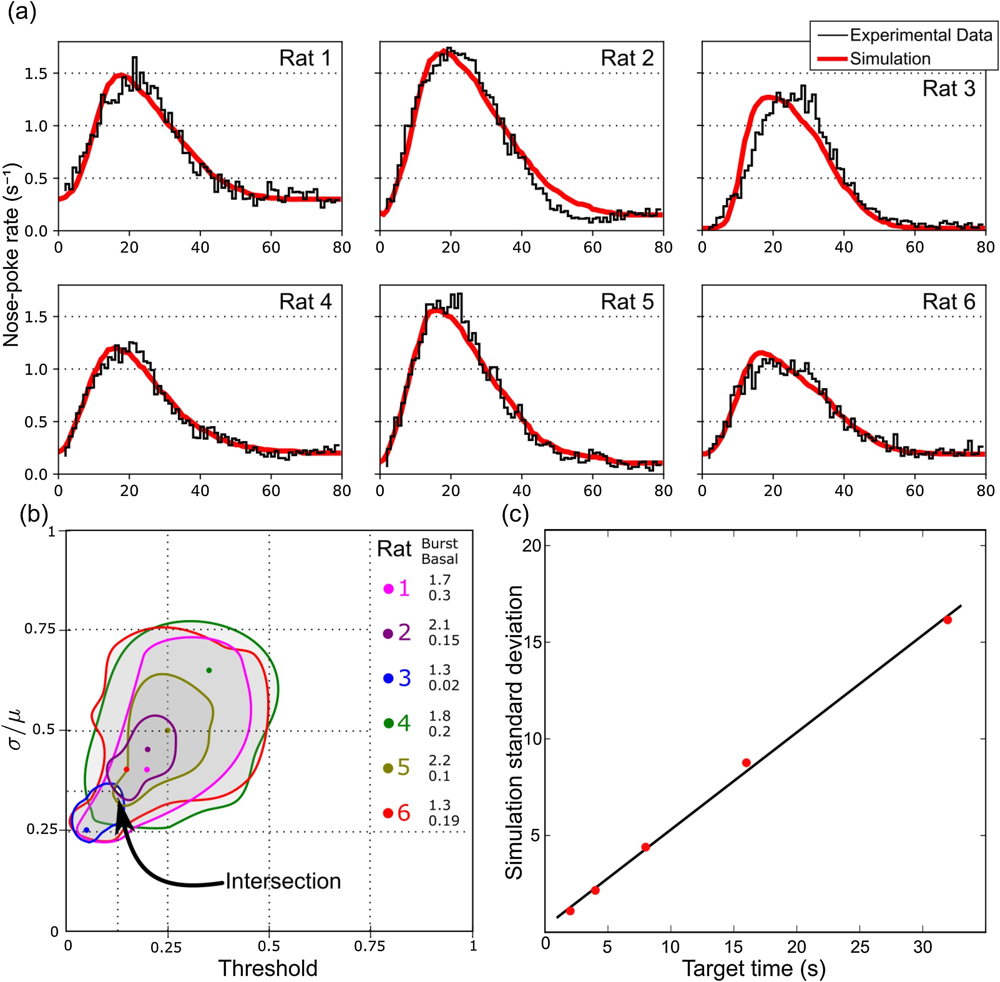
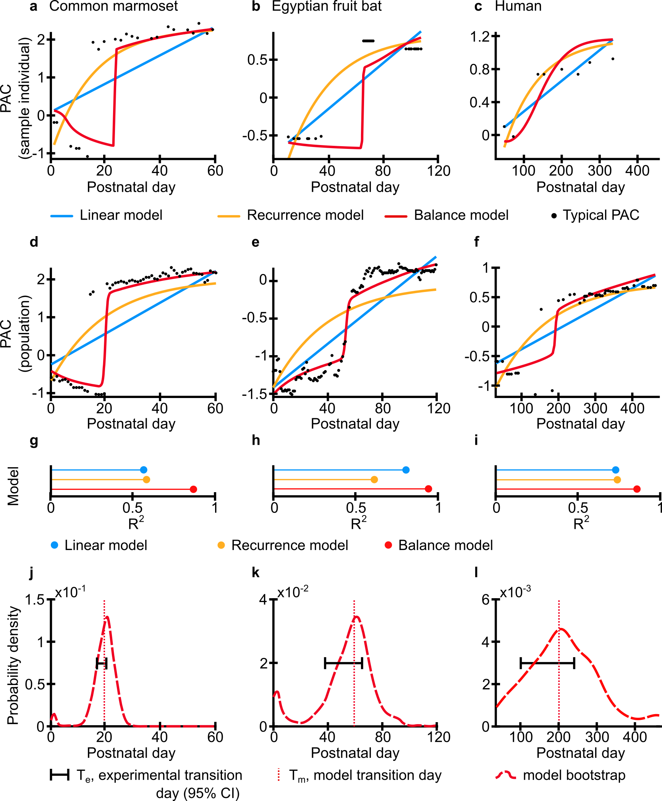
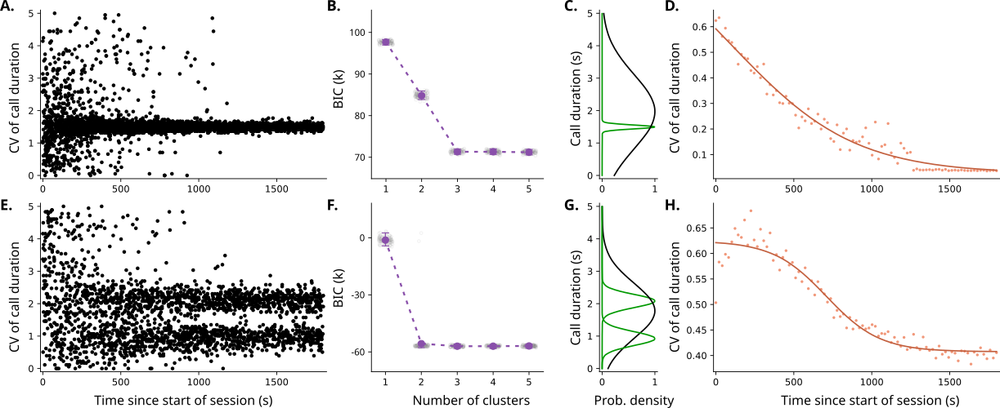

Samples of data visualization
Cooperative parental care drive vocal learning
Link to original paper:
Developmental Psychobiology, Vol 63(5), 2021

Humans and marmosets shared similar selection pressures that led to a developmental process for vocal production learning. (a) By giving birth to altricial offspring, parents need to share the care of infants (cooperative breeding), and infants need elicit the attention from the caregivers. The social reinforcement-based development of more mature sounding vocalizations is an effective way to elicit that attention. (b) Humans develop much slower than other primates; compared to marmoset monkeys, they development approximately 12 times slower. (c) The marmoset monkey—as a consequence of producing twins—converged upon the same solutions as humans through convergent evolution: cooperative breeding, altriciality, and vocal learning through social reinforcement.
A network can predict how rats estimate time
Link to original paper:
Behavioural Processes, Vol 168, 2019

Schematics of the behavioral task. (a) Experimental setup. During a Fixed-Interval trial, a time-dependent light will be used as a stimulus and at the first nose-poke (black horizontal bars) after 20 s the light will turn off and the food will drop at the food pellet. During a peak-interval, the light will keep turned on and the food will not drop. (b) Summary of the nose-pokes registered during each peak-interval trial with a target time of 20 s and the distribution containing the mean number of nose-pokes during each second of a trial.

Model results. (a) Fitting of the model with the experimental data for each of the 6 rats. The red line represents the simulation fitted with the best parameters and the black line represents the experimental data. (b) Region in the space of parameters (threshold vs. σ/μ) in which the goodness of fit of the simulation was smaller than 0.018. The solid dots represent best goodness of fit. Each color represents a different rat. In front of the labels, the upper number is the burst rate and the lower number is the basal rate for that particular rat. (c) Reproduction of the scalar property by calculating the standard deviation for 5 different target times (2, 4, 8, 16 and 32 s) and then plotting a linear regression.
Vocal learning depends on energy and information
Link to original paper:
PLOS Computational Biology, Vol 18(6), 2022

The energy-information balance model most successfully reproduces the transition day between two states for different species.
Analysis made using common marmoset in the left column, Egyptian fruit bat in the middle column, and human in the right column. a-c. Best model fit for individuals of the three species. Notice that for the bat dataset, the data collection was from different recording periods instead of a single longitudinal experiment; this lead to some gaps in the data. The black dots are the typical PAC, i.e., a moving average calculated from the experimental data per day of recording (see Methods - Estimation of typical PAC per day). Blue lines are the best fit for the linear model, orange lines are the best fit for the recurrence model and red lines are the best fit for the balance model. d-f. Model fitting for the population for the three different species. g-i. Comparison between the best R2 for each model. j-l. Comparison of transition date predicted by the balance model and calculated from experimental data. Both transition dates were calculated by fitting a sigmoid to the values, and distributions were obtained via bootstrap.
Animals can use their voice to acquire information
Link to original paper:
Nature Communications Biology (in press)

The active sampling model predicts diversity (3 clusters) and dynamics (sudden transition) of vocal interaction.
A. Scatter plot of the simulated call durations in an interaction between two agents using a vocal accommodation policy. B. Value of Bayesian information criterion (BIC) versus the number of components when Gaussian mixed models are used to cluster the call durations after ¼ of the sessions simulated by the vocal accommodation policy. The optimal number of clusters defined via elbow method is 2. C. Probability density function of each of the clusters from the vocal accommodation model, using the optimal number of clusters. D. Dynamics of the time-binned coefficient of variation (CV, standard deviation divided by the mean) of the vocal accommodation simulation, calculated via splitting the data into bins in time, and calculating the CV in each bin. The solid line represents a sigmoid fit of the CVs. E. Scatterplot of the simulated call durations in an interaction between two agents using the active sampling policy. F. BIC vs number of components when clustering vocal durations with a Gaussian mixture model from calls taken after ¼ of the sessions in active sampling simulation. G. Probability density function of each of the clusters from the active sampling model, using the optimal number of clusters given by the elbow method. H. Dynamics of the time-binned CV of the active sampling simulation, along with a sigmoid fit.